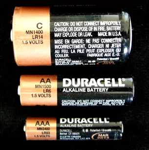
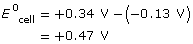
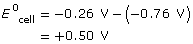
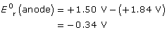

Module 4—Batteries and Balance
 Explore
Explore
 Read
Read

When you look at different commercial electric cells you may notice that the cells come in many different shapes. While this can mean they have different voltages, in many cases (including in the picture shown) the cells have the same voltage. How is it possible to have cells with different shapes and the same voltage?
In Lesson 1 you constructed a zinc-copper voltaic cell, and you observed that it had a voltage of 1.10 V. You also analyzed the voltage of a copper-silver voltaic cell. Would you expect the copper-silver cell to have the same voltage as the zinc-copper cell?
As you may suspect, the choice of chemicals in your cell has a large impact on the cell's voltage. Do you think there might be a relationship between the voltage produced by a cell and the position of the reactants in the table of half-reactions you have been using throughout Unit B?
Read pages 627–630 in the textbook to learn more about voltages—standard cell potentials—produced by cells and the standard reduction potentials listed on the “Table of Selected Standard Electrode Potentials.” Then work through “Communication example 2” and “Communication example 3” on page 631 of the textbook.
 Self-Check
Self-Check
SC 1. Calculate the standard cell potential of a zinc-copper voltaic cell like the one you analyzed in Lesson 1.
SC 2. Calculate the standard cell potential of a copper-silver voltaic cell.
SC 3. Comment on the following observation: “A higher cell potential is observed with reactants that are greatly separated on the table of half-reactions.”
SC 4. Suggest a reason why the three types of consumer cells shown in the picture above have the same voltage, or cell potential.
Self-Check Answers
Contact your teacher if your answers vary significantly from the answers provided here.
SC 1.
|
Half-Reaction |
Reduction |
Cu2+(aq) + 2 e– → Cu(s) |
Oxidation |
Zn(s) → Zn2+(aq) + 2 e– |
Eºcell = +0.34 V – (–0.76 V)
= +1.10 V
SC 2.
Half-Reaction |
|
Reduction |
Ag+(aq) + 1 e– → Ag(s) |
Oxidation |
Cu(s) → Cu2+(aq) + 2 e– |
Eºcell = +0.80 V – (+0.34 V)
= + 0.46 V
SC 3. The separation between the copper and zinc half-reactions is greater than the separation between the copper and silver half-reactions. This is consistent with the differences in cell potentials observed. Therefore, the observation is supported by the examples analyzed.
SC 4. The chemicals used in the three types of cells is the same, therefore the cell potentials should be identical.
Read
Sometimes the measured cell potential is not the same as the predicted standard cell potential. Read page 632 in the textbook to discover reasons for discrepancies you may encounter.
Self-Check
SC 5. Complete “Practice” questions 12–16 on page 633 of the textbook.
Self-Check Answers
Contact your teacher if your answers vary significantly from the answers provided here.
SC 5.
Practice 12.
a. Pb(s) | Pb2+(aq) Cu2+(aq) | Cu(s)
The cathode is Cu(s); the anode is Pb(s).

b. Zn(s) | Zn2+(aq) Ni2+(aq) | Ni(s)
The cathode is Ni(s); the anode is Zn(s).

c. Pt(s) | H2(g), H+(aq) Fe3+(aq), Fe2+(aq) | Pt(s)
The cathode and anode are both Pt(s).
Note that H2 can reduce Fe3+ to Fe2+ but can’t reduce it all the way to Fe.
Practice 13.
Eºcell = Eºr(cathode) – Eºr(anode)
Eºr(anode) = Eºr(cathode) – Eºcell

The reduction potential of indium(III) ion is –0.34 V.
Practice 14.
For the copper half-cell, Eºr would become +3.38 V.
For the zinc half-cell, Eºr would become +2.28 V.
In the shift to this new reference point, all the reduction potentials must increase by the same amount (3.04 V) so that the differences between individual values remain constant.
Practice 15.
Differences could be caused by non-standard conditions of temperature, pressure, or concentration. Other possible factors include purity of substances, oxide coating on electrodes, and variations in the salt bridge or porous boundary.
Practice 16.
The cell “goes dead” because the reaction Zn(s) + Fe2+(aq) → Zn2+(aq) + Fe(s) has proceeded to the point of equilibrium. At this point there is a high concentration of Zn2+(aq) and a low concentration of Fe2+(aq).
Because you have not yet studied Module 7 on equilibrium, your answers may not be as complete as those provided here.